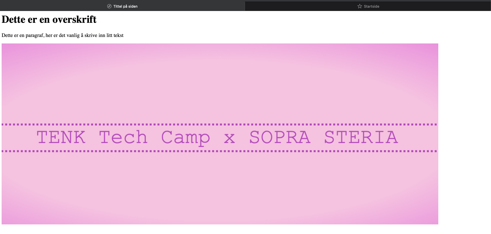
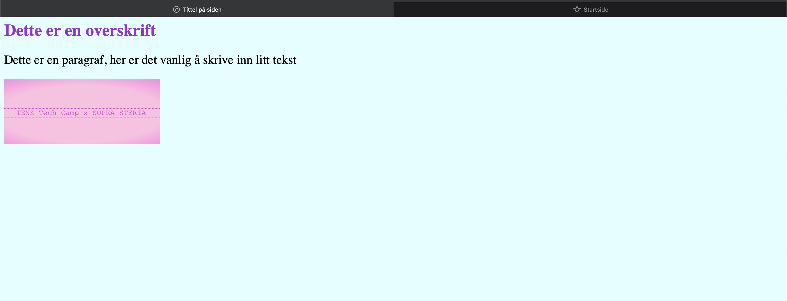

Lær å lage nettside med HTML og CSS
Introduksjon
I denne workshopen skal du få lære om HTML og CSS, og du skal få lage
din egen hjemmeside.
HTML står for Hyper Text Markup Language og brukes for å beskrive
innholdet i en nettside, mens CSS står for Cascading Style Sheets og
brukes til å style de ulike elementene i HTML-fila.
HTML oppbygging
En HTML-fil er bygd opp av flere ulike elementer. Den starter med en
html start- og slutt-tag som all html-kode skal skrives
mellom. Inne i html-elementet starter man med et head-element som
inneholder meta-data (data om data) på siden. Dette inkluderer blant annet en
tittel og linker til CSS-filer. Under head-elementet følger
body-elementet som inneholder de elementene som skal vises på
siden. Det er her man legger inn alt innhold på siden,
som for eksempel tekst, bilder, linker osv.
<html>
<head>
<!-- Meta-elementet under trengs for å kunne vise norske bokstaver på nettsiden -->
<meta charset="UTF-8" />
<link rel="stylesheet" type="text/css"
href="style.css" />
<title>Tittel på siden</title>
</head>
<body>
<h1 class="classname">Dette er en overskrift</h1>
<p>Dette er en paragraf, her er det vanlig å skrive inn litt tekst</p>
<img id="id" src="bilder/mitt_bilde.jpeg" alt="Beskrivelse av
bildet" />
</body>
</html>

CSS oppbygging
CSS brukes til å legge på styling på HTML-elementene i en HTML-fil. Dette kan være for eksempel farge på bakgrunn eller tekst, størrelse på de ulike HTML-elementene, type font, plassering av HTML-elementene osv.
body {
background-color: lightcyan;
}
p {
font-size: 24px;
}
.classname {
color: darkorchid;
}
#id {
width: 300px;
}

Mer om HTML
Det finnes mange ulike HTML-elementer som brukes til forskjellige formål på en nettside. Under er det listet opp noen av de mest vanlige elementene man bruker i en HTML-side og som du kan få bruk for når du løser oppgavene.
-
<p>- P står for paragraph og brukes for å legge til en paragraf eller en litt lengre tekst på HTML-siden.
- Eksempel:
<p>Her kan man skrive inn en lengre tekst til nettsiden.</p>
Hvordan det blir seende ut:
Her kan man skrive inn en lengre tekst til nettsiden.
- Mer info: https://www.w3schools.com/html/html_paragraphs.asp
-
<h>- H står for heading og brukes for å legge til en overskrift på siden. Det finnes 6
forskjellige
overskriftstyper
der
h1er den største ogh6er den minste. -
Eksempel:
<h1>Hovedoverskrift</h1>
<h6>Underoverskrift</h6>
Hvordan det blir seende ut:
Hovedoverskrift
Underoverskrift
- Mer info: https://www.w3schools.com/html/html_headings.asp
- H står for heading og brukes for å legge til en overskrift på siden. Det finnes 6
forskjellige
overskriftstyper
der
-
<br>- Brukes for å legge til linjeskift i teksten på siden.
- Eksempel:
Her er en tekst <br> som går over to linjer
Hvordan det blir seende ut:
Her er en tekst
som går over to linjer - Mer info: https://www.w3schools.com/tags/tag_br.asp
-
<div>- Div-elementet brukes for å gruppere HTML-elementer sammen. For eksempel vil man ofte gruppere en
overskrift og en paragraf i samme div om de hører sammen. På denne måten kan man enkelt legge inn
plassering, bakgrunnsfarge eller andre stiler til hele teksten ved å legge til stylingen på
div-en de er plassert inn i. - Eksempel:
<!-- Under ser du et eksempel på hvordan man kan legge til styling direkte i HTML-elementet med bruk av style-attributtet -->
<div style="background-color:lightblue">
<h5>Overskrift</h5> <br>
<p>Tekst som skal ha samme bakgrunnsfarge som overskriften i denne div-en</p>
</div>
Hvordan det blir seende ut:
Overskrift
Tekst som skal ha samme bakgrunnsfarge som overskriften i denne div-en
- Mer info: https://www.w3schools.com/tags/tag_div.ASP
- Div-elementet brukes for å gruppere HTML-elementer sammen. For eksempel vil man ofte gruppere en
overskrift og en paragraf i samme div om de hører sammen. På denne måten kan man enkelt legge inn
plassering, bakgrunnsfarge eller andre stiler til hele teksten ved å legge til stylingen på
-
<img>- Brukes for å legge til et bilde på nettsiden. Her må man legge inn fil-plasseringen til bildet i
srcattributtet. Hvis bildet ligger i samme mappe som HTML-fila kan man legge inn fil-navnet på bildet, hvis ikke må man legge til "stien" til mappen der bildet ligger foran navnet på bildet. For eksempel om bildet ligger i en mappe som heter bilder må man legge tilbilder/navn_på_bildet.jpg. Det er også vanlig å legge inn entenwidthellerheightfor å justere størrelsen på bildet. -
Eksempel:
<img src="bilder/css_eksempel.png" alt="Tekst som vises om bildet ikke laster inn" width="300px">
Hvordan det blir seende ut:
- Mer info: https://www.w3schools.com/tags/tag_img.asp
- Brukes for å legge til et bilde på nettsiden. Her må man legge inn fil-plasseringen til bildet i
<a>-
Brukes for å linke til andre sider. Linker til den siden/url-en man legger til i
hrefattributtet. Det som står mellom krokodillegapene (><) er teksten som vises på siden. -
Eksempel:
<a href="https://www.vg.no">VG</a>
Hvordan det blir seende ut:
VG - Mer info: https://www.w3schools.com/html/html_links.asp
-
Brukes for å linke til andre sider. Linker til den siden/url-en man legger til i
Det er også vanlig å gi disse elementene en class eller id for å kunne peke på disse
andre plasser i koden. Dette kan for eksempel være når man skal legge på styling på et element. En klasse kan
brukes på flere ulike elementer, mens en id må være unikt til et enkelt element. Derfor vil man ofte gi de
elementene som skal ha samme styling samme klassenavn, mens et element som skal ha en spesifikk stil kan få en
id.
Det finnes også mye mer man kan gjøre med HTML, du kan finne mer info her: https://www.w3schools.com/html/default.asp
Mer om CSS
For å legge til styling på HTML-kode er det vanlig å opprette en CSS-fil der styling-koden skal ligge. Denne
filen må man så linke til i HTML-filen slik at den får tak i koden som ligger der. For å linke CSS-filen til
HTML-filen legger man inn et link-element i head-seksjonen på HTML-fila som ser slik
ut
<link rel="stylesheet" type="text/css" href="navn_på_css_fil.css" />. Når denne er lagt til
vil man se at stylingen man legger inn i fila vises på nettsiden.
For å style de ulike elementene på HTML-fila må man referere til det elementet man vil style. Dette kan være for
eksempel body hvis man ønsker å legge til stilen på hele siden. For eksempel om man
ønsker samme bakgrunnsfarge på hele siden, eller samme font-type på all teksten.
Man kan også style de andre HTML-elementene man bruker som for eksempel p, div,
h1 osv. Da vil man se at alle de like elementene vil få samme stil, for eksempel
kan man legge til samme tekstfarge på alle h1 headingene.
Ønsker du derimot å legge til en stil på kun et enkelt element, eller en liten gruppe elementer kan du bruke en
id eller en class. En id er unik og kan kun brukes på ett enkelt element i HTML-koden,
mens en klasse kan legges til flere elementer. For å referere til disse må du bruke #id-navn for en
id, og .klasse-navn for en klasse. i CSS-fila
Listen over hva man kan legge til styling på er veldig lang, men noen av de mest vanlige og som du får bruk for i oppgavene er:
-
width- Denne definerer vidden til elementet, og kan defineres ved bruk av for eksempel
px(piksler) eller%(prosentvis andel av skjermen). - Eksempel:
p {
width: 300px;
}
Denne gjør at alle p-elementene i HTML-fila får en vidde på 300px. - Mer info her: https://www.w3schools.com/css/css_dimension.asp
- Denne definerer vidden til elementet, og kan defineres ved bruk av for eksempel
-
height- Denne definerer høyden til elementet, og kan defineres ofte ved bruk av
px(piksler). - Eksempel:
p {
height: 300px;
}
Denne gjør at alle p-elementene i HTML-fila får en høyde på 300px. - Mer info her: https://www.w3schools.com/css/css_dimension.asp
- Denne definerer høyden til elementet, og kan defineres ofte ved bruk av
-
margin- Brukes til å legge på en margin/luft på utsiden av elementet. Dette legger man ofte på for å få litt mellomrom mellom elementet og det som befinner seg ved siden av.
- Her kan man legge på
-left,-right,-topeller-bottomfor å velge hvilken side man skal legge til marginen på. Her bruker man også oftepx. - Eksempel:
p {
margin-left: 20px;
margin-right: 50px;
}
div {
margin: 5px;
}
Denne legger til en margin på 20px på venstre side, og 50px på høyre side på alle p-elementene i HTML-fila. I tillegg legger den på en margin på 5px på alle sidene på div-ene. - Mer info her: https://www.w3schools.com/css/css_margin.asp
-
padding- Brukes til å legge på en padding/luft på innsiden av elementet. Dette legger man ofte på for å få litt mellomrom mellom innholdet og kanten til elementet, for eksempel hvis man ikke ønsker at teksten skal gå helt ut i kantene.
- Her kan man legge på
-left,-right,-topeller-bottomfor å velge hvilken side man skal legge til paddingen på. Her bruker man også oftepx. - Eksempel:
p {
padding-left: 20px;
padding-right: 50px;
}
div {
padding: 5px;
}
Denne legger til en padding på 20px på venstre side, og 50px på høyre side på alle p-elementene i HTML-fila. I tillegg legger den på en padding på 5px på alle sidene på div-ene. - Mer info her: https://www.w3schools.com/css/css_padding.asp
-
float- Float brukes til å bestemme om et element skal legge seg på venstre eller høyre side. For eksempel om man har en div som inneholder både en paragraf og et bilde, kan man med float bestemme at teksten skal være på venstre side og bildet skal være på høyre side.
-
Eksempel:
p {
float: left;
}
img {
float: right;
}
Denne koden legger paragrafer til venstre og bilder til høyre. NB! For at dette skal fungere er det viktig at den totale vidden av paragrafen og bildet ikke er større enn vidden på elementet de er plassert inn i. - Mer info her: https://www.w3schools.com/css/css_float.asp
-
color- Color brukes for å bestemme farge på tekst.
-
Eksempel:
h1 {
color: pink;
}
Denne koden gjør alle h1 overskriftene rosa. - Mer info her: https://www.w3schools.com/cssref/pr_text_color.php
background-color- Background-color brukes for å legge på en bakgrunnsfarge på HTML-elementene.
-
Eksempel:
.grey_background {
background-color: grey;
}
Denne koden legger på en grå bakgrunnsfarge på alle HTML-elementene som har class grey_background. - Mer info her: https://www.w3schools.com/cssref/pr_background-color.php
Det finnes også mange flere muligheter med CSS, du kan finne mer inspirasjon og informasjon her: https://www.w3schools.com/css/default.asp